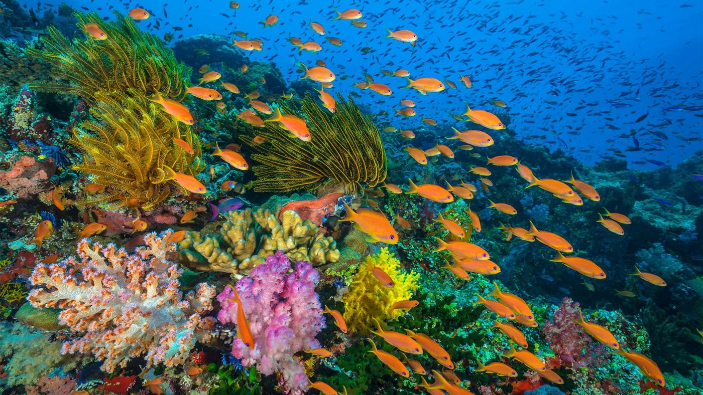
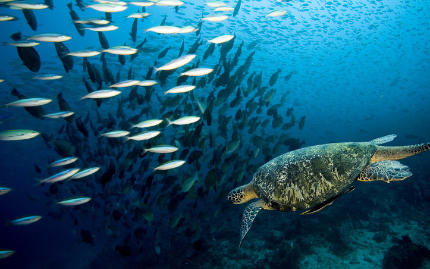

Epipelagic Zone
Fun information about the "Sunlight Zone"


About the Sunlight Zone
The Epipelagic Zone, or Sunlight Zone, is the layer of the ocean
that ranges from the surface down until 656ft below sea level. Because it is relatively
shallow, this layer has minimal pressure that increases with depth. Some animals
rise up from the Mesopelagic zone (zone below this) at night to feed. The
Epipelagic Zone contains a vast amount of the sea life in the ocean. There is more
light here than in deeper layers, so photosynthesis can occur here. This zone is
where most human activity and ocean life take place.
The Epipelagic zone contains a thousands of animals including dolphins, jellyfish,
most sharks, coral, and a variety of phytoplankton and algae. In the following pages,
we will look at the different interactions between animals on this layer of the ocean
as well as how they can interact with animals from the Mesopelagic zone. More specifically
we will be looking at Coral Reefs, Blacktip Reef Sharks, Anchovies, and Algae.
Learn more about the Epipelagic Zone at these sites:
Sciencing.com - A List of Pelagic Fish
National Geographic - All About the Ocean
World Atlas - The 5 Layers of The Ocean